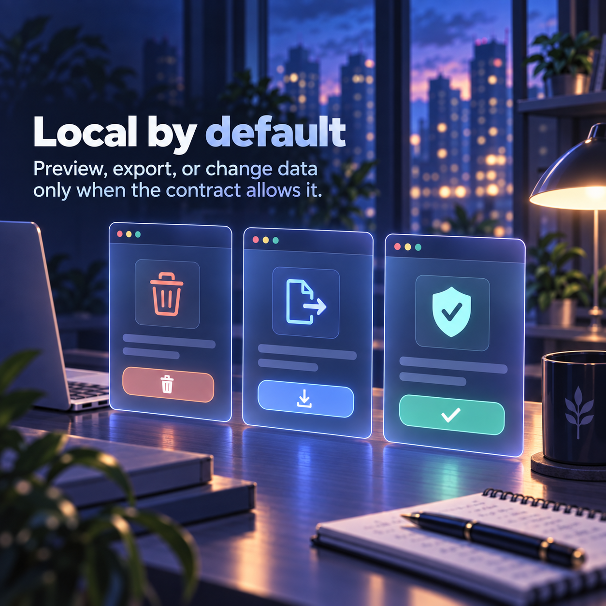

Load one directory
Each extension is independently installable and does not depend on sibling runtime folders.
Install one utility, understand its reach, and know what evidence exists before you use it.
Small extensions become hard to trust when their permissions, release path, and verification state are scattered. A tiny utility still needs a visible boundary.
Each extension is independently installable and does not depend on sibling runtime folders.
Host access and browser permissions need a current code path and a documented reason.
Deterministic tests and live browser smoke tests are different kinds of confidence.

Registry metadata inventories the collection; it does not become a shared runtime. Tests run per extension. Releases package separate ZIPs and checksums. Destructive actions require preview and confirmation, while exporters state their completeness limits.
Current state: the collection is packaged and locally tested; live-site evidence remains explicit where required.